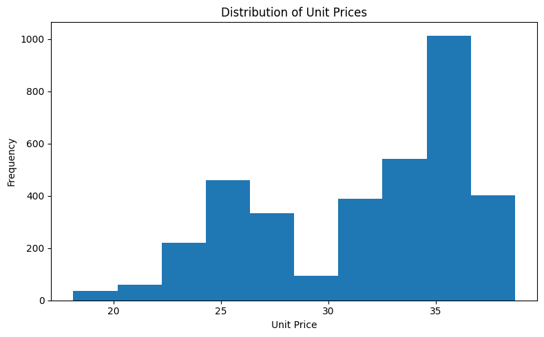

Understanding Coffee Sales at Different Times
Overall Introduction
Our project will visualize trends in coffee sales depending on the time of
day and the time of year of the sale. Our dataset includes data on many
coffee sales, such as the name of the coffee, the amount of money spent on
the coffee, and the payment method for the coffee. Each coffee sale is
also tracked with copious amounts of timestamp data, such as the time of
day, day, day of week, month, and year. Furthermore, the timestamp data is
listed both as categorical features and numerical features, which allows
for the creation of different types of visualizations that can aid users’
understanding of our report. This topic is important to study and
elucidate since the coffee market represents one of the largest consumer
goods markets and is only growing. Data published by Grand View Research
estimates the annual coffee market in 2025 to be 284.8 billion dollars,
with it growing to nearly 370 billion dollars by the end of the decade.
Creating a good report analyzing coffee sales, with appealing and
easy-to-understand visualization, will help coffee businesses and
consumers better understand this growing and expansive market.
References
The following sources informed our understanding of coffee consumption
behavior, seasonal trends, and the broader context of the coffee market:
Seasonal Coffee Drinks and Seasonality in Coffee Demand , review the article
Your coffee habit could be linked to healthier aging , or consult the peer-reviewed study
Behavioral and psychological aspects of coffee consumption
on ScienceDirect. These sources help contextualize the patterns observed
in our analysis of coffee sales over time.
Introduction to the data
The dataset was sourced from Kaggle. It contains 3,547 rows and 11 columns
of transaction records from a coffee shop, providing a sufficient sample
size for meaningful analysis while still being manageable. The dataset
covers sales from March 1, 2024, to March 23, 2025, and includes details
such as time of purchase (Date, Time, Hour of Day), product type (coffee
name), payment method (cash or card), and transaction amount.
These features include both categorical and numerical data, making it
suitable for analyzing sales patterns. With structured temporal features
like Date and Time, the dataset also makes it possible to explore consumer
purchasing patterns across different periods, products, and days, and to
conduct time-series or trend analysis.
The detail information about the features are listed in the following
table:
| Variable Name |
Details |
| hour_of_day |
Hour of the day when the transaction occurred (0–23)
|
| cash_type |
Payment type used by the customer (e.g., cash, card)
|
| money |
Total amount paid for the transaction |
| coffee_name |
Name of the coffee product purchased |
| Time_of_Day |
Time-of-day category for the transaction (e.g., Morning,
Afternoon)
|
| Weekday |
Day of the week of the transaction (e.g., Mon, Tue)
|
| Month_name |
Name of the month in which the transaction occurred
|
| Weekdaysort |
Numeric sort index for day of week (to enable correct ordering)
|
| Monthsort |
Numeric sort index for month (to enable correct ordering)
|
| Date |
Calendar date of the transaction |
| Time |
Exact timestamp of the transaction |
Data Visualization
In the following sections, we walk through a series of visualizations that
build on each other to tell a story about how coffee is purchased over
time. We begin with a broad view of sales across the year, then look at
which products drive those sales, how much customers typically spend, and
finally how preferences vary by time of day.
1. Coffee Sales Over Time by Type
We start with a high-level view of how coffee sales evolve over time. This
line chart shows daily total sales, broken down by coffee type, so we can
see both overall trends and differences between individual drinks.
This visualization tracks individual coffee sales transactions across
eight different beverage types over 15 months from March 2024 through
March 2025, using a lollipop chart where each colored dot represents a
single sale. Latte (gray) and Americano with Milk (orange) consistently
generate the highest-value transactions, with some sales exceeding 300,
while specialty drinks like Hot Chocolate and Cocoa typically stay under
150. A dramatic sales gap appears between August and September 2024,
followed by recovery in October, and Americano (blue) shows notably
increased activity in February-March 2025. The overlapping data points
reveal that multiple coffee types generate sales simultaneously throughout
most periods, with Cappuccino, Latte, and Americano with Milk maintaining
the most consistent presence as core menu items. This granular view allows
stakeholders to identify both typical purchasing patterns and exceptional
high-value transactions across all product categories.
This visualization strategically employs marks and channels with point
marks (dots) and line marks (stems) to create lollipops, using position on
both axes as the primary quantitative channel—vertical position encodes
sales amount (which humans perceive with high accuracy) while horizontal
position encodes time sequentially. Color hue serves as the categorical
channel to distinguish eight coffee types (blue for Americano, orange for
Americano with Milk, green for Cappuccino, etc.), with sufficient
perceptual separability maintained even when points overlap, and a
comprehensive legend provides the decoding reference system. I chose
lollipops over bar or line charts because the stem-and-dot structure
maintains optimal data-ink ratio and reduces visual clutter with hundreds
of overlapping points, while the Gestalt principle of connection links
each value to its zero baseline to reinforce quantitative relationships.
The customized axis extends from $0-$350 with gridlines for reference,
prioritizing transparency and expressiveness by showing individual
transactions rather than aggregated statistics, which enables stakeholders
to understand sales variability, identify outliers, and recognize temporal
patterns essential for inventory and staffing decisions.
Having seen how sales change over time for each coffee type, we next turn
to the overall mix of products to understand which drinks make up the bulk
of sales across the entire period.
2. Coffee Type Share of Total Sales
This visualization summarizes the relative contribution of each coffee
type to total sales. Instead of focusing on specific dates, it answers the
question: Which drinks matter most overall?
The pie chart shows that the coffee shop’s sales are dominated by a
few core drinks, with Americano with Milk and Latte together
accounting for nearly half of all purchases. Cappuccinos and
Americanos make up the next largest segments, indicating strong
customer preference for classic espresso-based beverages.
Lower-selling items such as Hot Chocolate, Cocoa, and Espresso
represent much smaller portions of total sales, suggesting they are
more niche choices rather than everyday favorites. Overall, the
distribution highlights a clear hierarchy of demand, with a few staple
drinks driving most of the year’s revenue.
A pie chart was chosen because the goal of this visualization is to
communicate the relative contribution of each coffee type to total
annual sales, which is most naturally expressed as parts of a whole.
The use of distinct, contrasting colors helps differentiate categories
at a glance, while percentage labels on the slices provide precise
quantitative context without requiring users to interpret values from
a legend alone. The slight separation of slices and clean layout
improve readability, and the legend on the right ensures that each
color-coded segment can be easily matched to its corresponding drink.
This design avoids unnecessary complexity and focuses on giving
viewers an immediate sense of which beverages are most and least
popular.
Once we know which drinks are most popular, it is also important to
understand how much customers typically spend on a single coffee purchase.
The next visualization looks at the distribution of those amounts.
3. Distribution of Transaction Amounts
This histogram shows how much money customers usually spend per
transaction. It highlights common price points and reveals whether most
purchases cluster around a narrow range or are spread out over many
different amounts.
The histogram reveals a bimodal distribution of coffee prices in the
dataset, with two distinct peaks around $25–27 and $34–37. This
suggests the coffee shop likely offers two main pricing tiers—perhaps
regular-sized drinks at the lower price point and premium or larger
sizes at the higher tier. The gap between these peaks indicates clear
price segmentation rather than a continuous spectrum, which is typical
of menu-based pricing strategies. Understanding this distribution
helps contextualize revenue patterns and customer purchasing behavior.
A histogram is the most appropriate choice for displaying the
distribution of a continuous numerical variable like price. The bin
width is set to capture meaningful price ranges while revealing the
bimodal pattern without over-smoothing or creating excessive noise.
The simple blue color scheme keeps focus on the shape of the
distribution itself rather than introducing unnecessary visual
complexity. The frequency scale on the y-axis provides clear
quantitative information about how many transactions fall into each
price range.

So far, we have focused on overall patterns and typical spending levels.
Next, we combine the time and spending perspectives by looking more
closely at how total daily spending changes and allowing viewers to zoom
into specific periods.
4. Zoomable Daily Coffee Spending
This interactive bar chart shows total spending for each day. The lower
panel provides an overview of the full time range, while the upper panel
zooms into a selected window. This makes it easier to investigate
short-term spikes or quieter periods that might be hidden in a static
view.
This visualization displays daily total coffee spending over a 15-month
period from March 2024 through March 2025, with each bar representing the
aggregate sales for a single day. The data reveals significant day-to-day
variability in spending, with daily totals ranging from approximately 100
on slower days to peaks exceeding $800 in mid-October 2024 and late
February 2025. A clear upward trend emerges in the fall months
(September-November 2024), where sustained higher spending levels suggest
increased customer traffic or higher-value purchases, followed by a
decline in December 2024 and January 2025, likely reflecting seasonal
patterns or holiday closures. The interactive overview panel below the
main chart provides context by showing the entire dataset at a compressed
scale, allowing users to click and drag to zoom into specific time periods
for detailed analysis. This dual-view design enables both macro-level
pattern recognition (identifying seasonal trends and growth periods) and
micro-level investigation (examining specific days or weeks of interest).
This visualization employs a bar chart with area marks to represent daily
spending totals, using vertical position as the primary quantitative
channel encoding dollar amounts and horizontal position encoding time
sequentially across the x-axis. The color channel uses a single blue hue
with subtle gradient shading to create visual cohesion while the varying
bar heights leverage length as an anditional quantitative channel, which
humans perceive accurately for magnitude comparisons. I customized the
layout to include an interactive overview + detail design pattern with two
coordinated views: the main chart shows the full resolution data with
gridlines for precise value reading, while the compressed overview panel
below enables navigation through the dataset via click-and-drag zooming,
addressing the challenge of displaying 450+ days of data in a readable
format. The bar chart format was chosen over line charts or point-based
visualizations because it emphasizes the discrete nature of daily totals
and uses the Gestalt principle of enclosure to clearly show each day's
contribution to overall revenue, with bars extending from a zero baseline
to maintain accurate magnitude perception and avoid misleading visual
comparisons. This design prioritizes both effectiveness (accurate
quantitative comparison) and interactivity (user-controlled exploration),
enabling stakeholders to identify revenue trends, investigate anomalies
like the October peak, and make data-driven decisions about staffing,
inventory, and business strategy.
Finally, beyond when and how much people spend, we are also interested in
when during the day different drinks are most popular. Our last
visualization looks at the flow from time-of-day categories to specific
coffee types.
5. Time of Day to Coffee Type Flow
This Sankey diagram shows how total spending flows from time-of-day
categories (such as Morning, Afternoon, or Evening) to individual coffee
types. It helps answer questions like:
Which drinks dominate in the morning? and
Do preferences shift later in the day?
This visualization reveals the relationship between when customers buy
coffee and what types they purchase, with the flow thickness representing
revenue rather than transaction count. By tracking money flows from
different times of day to specific coffee products, we can identify peak
revenue periods and the most profitable coffee-time combinations. This
helps answer questions like "Which coffees drive morning revenue?" or
"What do afternoon customers prefer?" The interactive tooltips provide
exact dollar amounts for each connection, making it easy to quantify these
patterns.
The Sankey diagram format naturally represents flow and proportion, making
it ideal for showing how revenue "flows" from temporal categories to
product categories. The left-to-right orientation follows a logical
temporal progression, with time periods on the left feeding into coffee
types on the right. Interactive hover states and tooltips add depth to the
visualization without cluttering the main display, allowing users to
explore specific connections on demand. The color coding by source time
period helps visually trace flows across the diagram while maintaining
clarity.
Summary and additional work
In this visualization analysis, we try to explore the US unemployment rate
across states. We also examine the relation between unemployment rate and
other social factors.
Unfortunately, this is the 2010 data thus may be different than the
current economics status. Also, unemployment rate may fluctuate seasonally
thus adding a time series analysis will be more informative.
If you are interested in the project and want to share more opinions or
resource about the project, please contact: Ben Ghouzi
(xiaoy.yang@northeastern.edu)